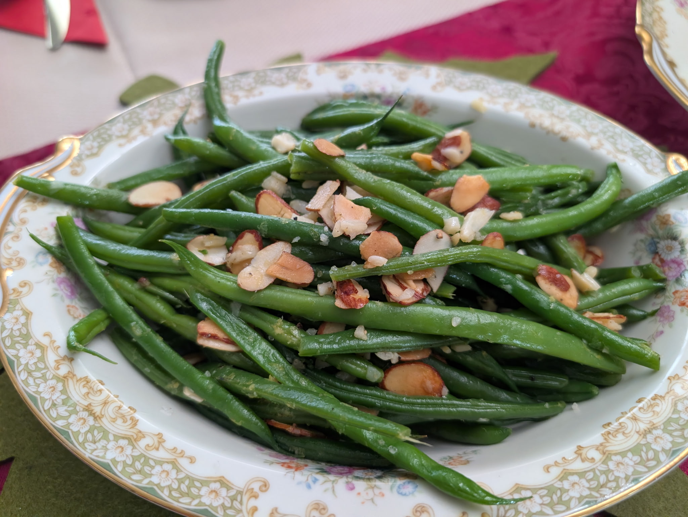

Haricots Verts Amandine (V)

Ingredients
- 1 lb haricots verts (French green beans), ends trimmed
- 2 tbs extra-virgin olive oil or clarified butter
- ¼ C slivered almonds
- 2 cloves garlic, minced
- Zest of 1 lemon
- Salt and freshly ground black pepper to taste
Directions
- Prep: Prepare a large bowl of ice water and set aside.
- Blanch: Bring a large pot of salted water to a boil. Add beans and cook until tender-crisp and bright green, about 3-4 minutes. Transfer immediately to ice water.
- Toast Almonds: In a dry skillet over medium heat, toast almonds, stirring frequently, until golden and fragrant. Remove and set aside.
- Sauté: Heat olive oil in the skillet over medium heat. Add garlic and cook briefly, stirring to prevent burning.
- Heat Beans: Drain beans and add to the skillet. Increase heat to medium‑high and sauté until heated through, 2-3 minutes, stirring frequently.
- Finish: Remove from heat. Add most of the toasted almonds and lemon zest. Toss, then season with salt and pepper to taste.
- Serve: Transfer to a platter and top with remaining almonds and lemon zest. Serve immediately.
The Gumbo Page
Michael Fritsche
mbf@fritsche.org